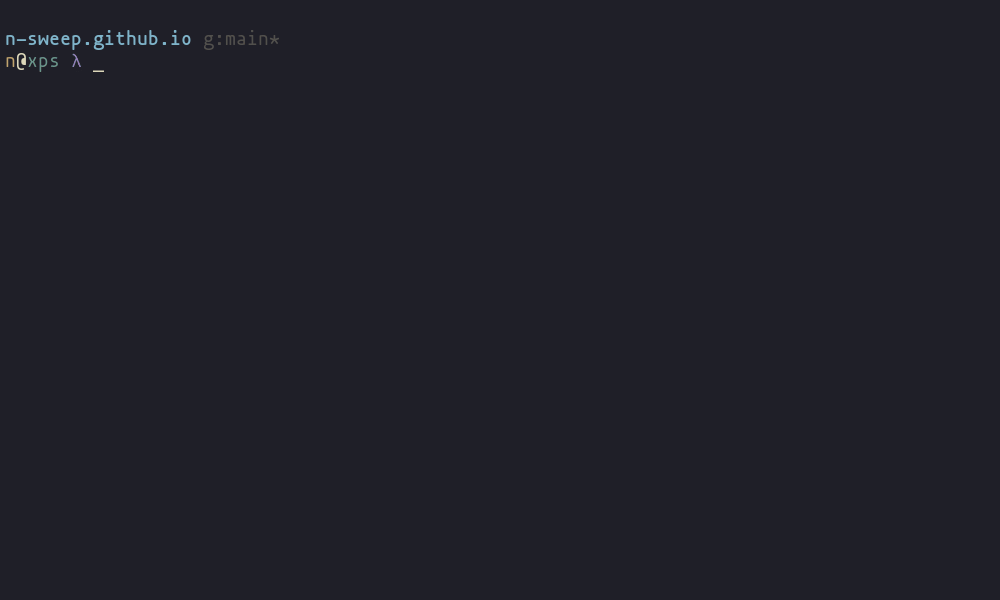

Way back in 2021 I learned how to build a simple static website on GitHub Pages, wrote a few articles (including one about how I did it), and then promptly forgot about the project amidst the noise of distractions such as my day job. Now I’m back to do it all again! Only this time, with the awesome open-source scientific and technical publishing system Quarto.

Prerequisite Packages
If you want to follow along, you’ll need to ensure some prerequisite packages are installed. It’s a shorter list than last time:
Note: Package installation is left as an exercise for the reader, as I am on a non-standard operating system
Hosting with Github Pages
There are a number of ways to publish a Quarto website; we’ll be using GitHub Pages. There are also a few different ways to publish to Pages; we’ll be using the Quarto publish command.
Create a New GitHub Repository
Important: Your repo should be named with your github username in the format username.github.io for GitHub to host it correctly.
Click here for a guide on creating a new GitHub repo.
Clone the Repo Locally
Next we’ll move to the directory where we want to store the site’s files and clone the repo to our local machine:
# this will create a new directory at `/my/target/directory/username.github.io`
cd /my/target/directory
git clone https://github.com/username/username.github.io.gitPrepare the Repo
According to the Quarto docs, the repo requires a branch called gh-pages, which the quarto publish command will write the site to automatically.
Create the Source Branch
git checkout --orphan gh-pages
git reset --hard # make sure all changes are committed before running this!
git commit --allow-empty -m "Initializing gh-pages branch"
git push origin gh-pages[TODO] make sure github pages settings are correct
.gitignore
Quarto is going to generate some files that we don’t want to check into version control. Let’s add the following to lines to our repo’s .gitignore file:
/.quarto/
/_site/Quarto
Publishing is going to be a snap with all that GitHub setup out of the way. But now we need something to publish, and Quarto can help with that too.
Create and View a Template Website
quarto create project
Quarto provides a quickstart command with two options (website and blog) for initializing a website. This command will create a new directory if we provide it a name, but we want to use our new git repository:
# we should still be in `/my/target/directory` from the previous steps
cd username.github.io
quarto create project website .
# or
quarto create project blog .There may be other differences, but the blog option initializes the site with a listing page as the front page while the website option does not.
quarto preview
While it isn’t very personal yet, we now have a skeleton of a website. Let’s take a look at it with:
quarto previewI chose the blog option, so this command will open a browser tab that looks something like this:

Personalize
The previous steps created a number of files in our repo. From the documentation:
Here’s a summary of the key files created within the starter blog project:
File Description _quarto.ymlQuarto project file. index.qmdBlog home page. about.qmdBlog about page. posts/Directory containing posts posts/_metadata.ymlShared options for posts styles.cssCustom CSS for website
.qmd files are essentially markdown files with some special Quarto sauce. We can edit index.qmd and about.qmd to change the content of the pages, and even create new .qmd files for additional pages. New pages can be linked to from other documents and in the navbar. Since I used the quarto create project blog command, the list includes a posts/ directory, where blog posts like this one (also written in markdown) live.
If quarto preview is still running in your terminal, the page in your browser should reload whenever you make changes. If not, just run quarto preview again to have a look:

Publish
Now the git and GitHub setup we did earlier pays off. Once we’re happy with the changes and our new blog post, we’ll run quarto publish .

And that’s it! The rest is automated by Quarto, and when it is finished, it will open the live, updated website in a new browser tab for us to admire.

This page lovingly generated by Quarto ❤️